| 循环编程 |
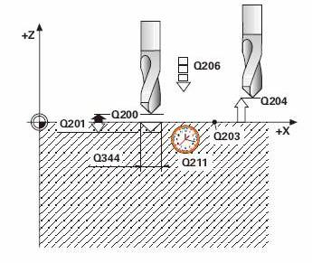 0 BEGIN PGM 1 MM . . . 10 CYCL DEF 240 CENTERING Q200 = 2 安全高度 Q343 = 1 选择深度/ 直径 Q201 = +0 定心孔深度 Q344 = -9 定心孔直径 Q206 = 250 切入进给速率 Q211 = 0.1 在孔底的停顿时间 Q203 = +20 表面坐标 Q204 = 100 第二安全高度 ... END PGM 1 MM 注意： ■ 循环参数Q201 （深度）或Q344 （直径）的代数符号决定加工方向（与 Q343 有关）。 ■ 输入Q203 （工件表面坐标）的绝对坐标值。 ■ 调用循环。 循环200（钻孔）（输入数据） 循环定义 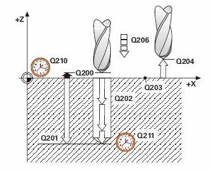 0 BEGIN PGM 1 MM . . . 10 CYCL DEF 200 DRILLING Q200 = 2 安全高度 Q201 = -18 深度 Q206 = 200 切入进给速率 Q202 = 5 切入深度 Q210 = 0 在顶部停顿时间 Q203 = +0 表面坐标 Q204 = 50 第二安全高度 Q211 = 0 在孔底的停顿时间 ... END PGM 1 MM 注意： ■ 循环参数DEPTH （深度）的代数符号决定加工方向。 ■ 输入Q203 （工件表面坐标）的绝对坐标值。 ■ 调用循环。 任务：孔 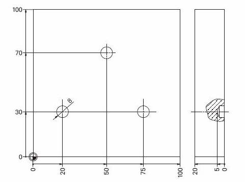 BEGIN PGM... MM 创建程序 BLK FORM 0.1 ... X... Y... Z... 定义工件毛坯 BLK FORM 0.2 X... Y... Z... TOOL CALL ... ... S... 调用刀具 CYCL DEF ... 定义循环 L Z+... 移至第二安全高度 L X... Y... M99 孔1 的位置 / 调用循环 L X... Y... M99 孔2 / 调用循环 L X... Y... M99 孔3 / 调用循环 ... 退刀，程序结束 解决方法： 孔 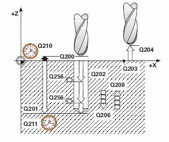 0 BEGIN PGM 1 MM . . . 10 CYCL DEF 203 UNIVERSAL DRILLING Q200 = 2 安全高度 Q201 = -25 深度 Q206 = 200 切入进给速率 Q202 = 10 切入深度 Q210 = 0 在顶部停顿时间 Q203 = +0 表面坐标 Q204 = 50 第二安全高度 Q212 = 0 缩减量 Q213 = 1 退刀前的停顿次数 Q205 = 5 最小切入深度 Q211 = 0 在孔底的停顿时间 Q208 = 500 退刀速率 Q256 = 0.2 断屑距离 ... END PGM 1 MM 注意： ■ 如果Q208 的值为0，退刀速率等于Q206 的钻孔进给速率 循环206（浮动夹头攻丝架攻丝）（输入数据） 循环定义 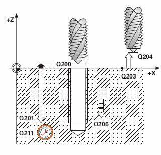 0 BEGIN PGM 1 MM . . . 10 CYCL DEF 206 TAPPING NEW 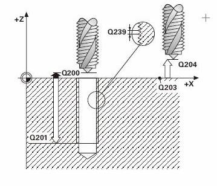 0 BEGIN PGM 1 MM . . . 10 CYCL DEF 207 RIGID TAPPING NEW Q200 = 2 安全高度 Q201 = -25 深度 Q239 = +1.5 螺纹螺距 Q203 = +0 表面坐标 Q204 = 50 第二安全高度 ... END PGM 1 MM 注意： ■ 用可控主轴进行攻丝，需要机床制造商对机床和TNC 进行设置。 ■ TNC 用可控主轴进行攻丝加工。这样保证要求的螺距。 ■ 进给速率和主轴转速倍率调节电位器被锁定。 循环208（螺旋镗铣）（输入数据） 循环定义 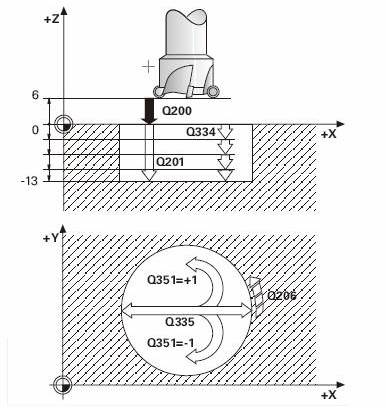 ■ 如果输入的名义直径Q335 等于刀具直径， TNC 直接钻孔到最终深度。 ■ 根据需要在刀具表（TOOL.T）的ANGLE （角度）列输入最大允许的刀具切入 角。如果切入深度太大， TNC 自动计算最大允许的切入深度。 0 BEGIN PGM 1 MM . . . 10 CYCL DEF 208 BORE MILLING Q200 = 6 安全高度 Q201 = -13 深度 Q206 = 150 切入进给速率 Q334 = 1.5 切入深度 Q203 = +100 表面坐标 Q204 = 50 第二安全高度 Q335 = 25 名义直径 Q342 = 0 粗加直径 Q351 = +1 铣削类型（顺铣或逆铣） ... END PGM 1 MM 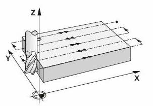 方式Q389=1 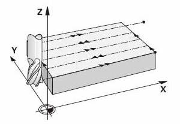 方式Q389=2 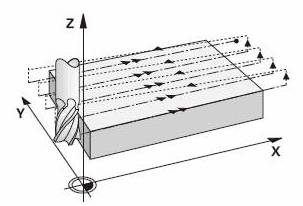 循环251（矩形型腔）（输入数据） 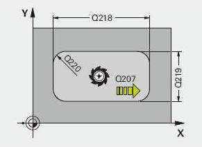 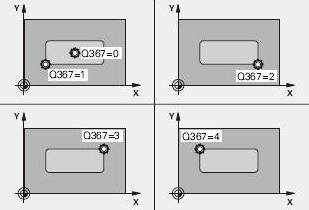 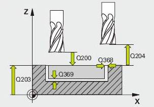 0 BEGIN PGM 1 MM . . . 10 CYCL DEF 251 RECTANGULAR Q215 = 0 加工策略 Q218 = 80 第一边长 Q219 = 60 第二边长 Q220 = 5 角点半径 Q368 = 0.2 侧边余量 Q224 = +0 旋转角度 Q367 = 0 型腔定位位置 Q207 = 500 铣削进给速率 Q351 = +1 顺铣/ 逆铣 Q201 = -20 深度 Q202 = 5 切入深度 Q369 = 0.1 底面余量 Q206 = 150 切入进给速率 Q338 = 5 精铣进给量 Q200 = 2 安全高度 Q203 = +0 表面坐标 Q204 = 50 第二安全高度 Q370 = 1 刀具路径行距系数 Q366 = 1 切入方法 ... END PGM 1 MM 循环252（圆弧型腔）（输入数据） 循环定义 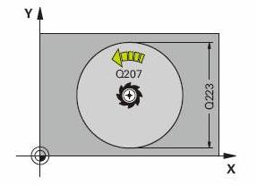 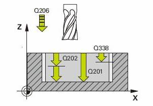 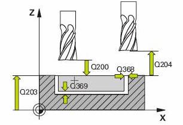 0 BEGIN PGM 1 MM . . . 10 CYCL DEF 252 CIRCULAR Q215 = 0 加工策略 Q223 = 60 圆直径 Q368 = 0.2 侧边余量 Q207 = 500 铣削进给速率 Q351 = +1 顺铣/ 逆铣 Q201 = -20 深度 Q202 = 5 切入深度 Q369 = 0.1 底面余量 Q206 = 150 切入进给速率 Q338 = 5 精铣进给量 Q200 = 2 安全高度 Q203 = +0 表面坐标 Q204 = 50 第二安全高度 Q370 = 1 刀具路径行距系数 Q366 = 1 切入 ... END PGM 1 MM 循环253（铣键槽）（输入数据） 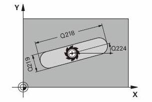 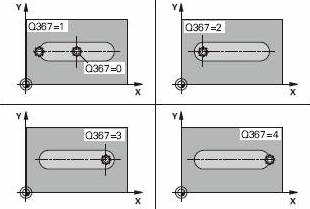 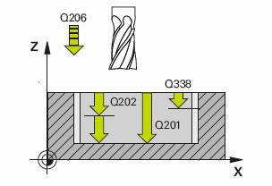 0 BEGIN PGM 1 MM . . . 10 CYCL DEF 253 SLOT MILLING Q215 = 0 加工策略 Q218 = 80 第一边长度（键槽长度） Q219 = 12 第二边长度（键槽宽度） Q368 = 0.2 侧边余量 Q224 = +0 旋转角度 Q367 = 0 槽位置 Q207 = 500 铣削进给速率 Q351 = +1 顺铣/ 逆铣 Q201 = -20 深度 Q202 = 5 切入深度 Q369 = 0.1 底面余量 Q206 = 150 切入进给速率 Q338 = 5 精铣进给量 Q200 = 2 安全高度 Q203 = +0 表面坐标 Q204 = 50 第二安全高度 Q366 = 1 切入方法 Q385 = 500 精铣进给速率 ... END PGM 1 MM 循环254（扇形槽）（输入数据） 循环定义 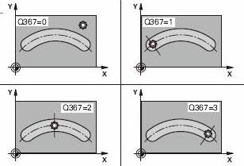 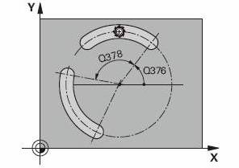 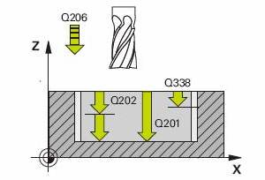 0 BEGIN PGM 1 MM 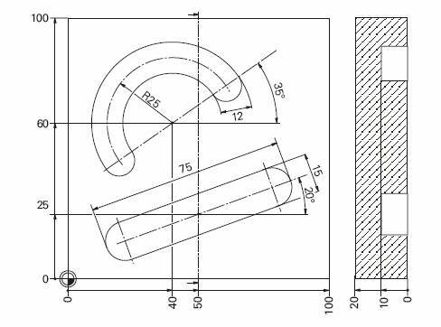 解决方法： 开槽板 完整程序 0 BEGIN PGM 6BAS210 MM 1 BLK FORM 0.1 Z X+0 Y+0 Z-20 2 BLK FORM 0.2 X+100 Y+100 Z+0 3 TOOL CALL 5 Z S1000 4 L Z+100 R0 FMAX M3 5 CYCL DEF 253 SLOT MILLING Q215=0 加工策略 Q218=75 槽长 Q219=15 槽宽 Q368=0 侧边余量 Q374=+20 旋转角度 Q367=0 槽位置 Q207=200 铣削进给速率 Q351=+1 顺铣/ 逆铣 Q201=-10 深度 Q202=5 切入深度 Q369=0 底面余量 Q206=100 切入进给速率 Q338=5 精铣进给量 Q200=2 安全高度 Q203=+0 表面坐标 Q204=0 第二安全高度 Q366=1 切入方法 Q385=500 精铣进给速率 6 CYCL CALL POS X+50 Y+25 Z+0 FMAX 7 CYCL DEF 254 CIRCULAR SLOT Q215=0 加工策略 Q219=12 槽宽 Q368=0 侧边余量 Q375=50 节圆直径 Q367=0 槽位置原点 Q216=+40 第一轴中心 Q217=+60 第二轴中心 Q376=35 起始角 Q248=180 角度 Q378=+0 步进角 Q377=1 加工个数 Q207=200 铣削进给速率 Q351=+1 顺铣/ 逆铣 Q201=-10 深度 Q202=5 切入深度 Q369=0 底面余量 Q206=100 切入进给速率 Q338=0 精铣进给量 Q200=2 安全高度 Q203=+0 表面坐标 Q204=0 第二安全高度 Q366=1 切入方法 Q385=500 精铣进给速率 8 CYCL CALL 9 L Z+100 R0 FMAX M30 10 END PGM 6BAS210 MM 矩形凸台，圆形凸台循环（输入数据） 编程前注意： .用半径补偿RO在加工面上将刀具预定位至起点位置。注意参数Q367（凸台位置）。 .TNC自动沿刀具轴预定位刀具。注意参数Q204（第二安全高度）。 .循环参数DEPTH（深度）的代数符号决定加工方向。如果编程DEPTH=0，这个循环将不被执行。 任务：矩形1 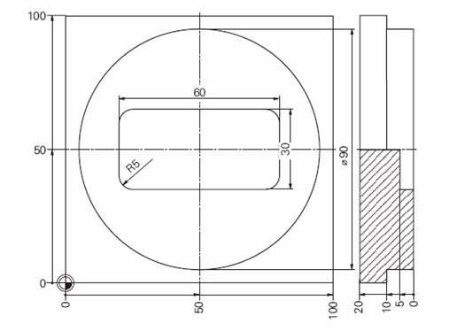 解决方法： 矩形I 完整程序 0 BEGIN PGM 6BAS265 MM 1 BLK FORM 0.1 Z X+0 Y+0 Z-20 2 BLK FORM 0.2 X+100 Y+100 Z+0 3 TOOL CALL 13 Z S800 4 L Z+100 R0 FMAX M3 5 CYCL DEF 257 CIRCULAR STUD Q223=+90 零件最终直径 Q222=+140 工件毛坯直径 Q368=0 侧边余量 Q207=500 铣削进给速率 Q351=+1 顺铣/ 逆铣 Q201=-10 深度 Q202=5 切入深度 Q206=3000 切入进给速率 Q200=2 安全高度 Q203=+0 表面坐标 Q204=50 第二安全高度 Q370=+1 路径行距系数 6 CYCL CALL POS X+50 Y+50 Z+0 FMAX 7 CYCL DEF 251 RECTANGULAR POCKET Q215=0 加工策略 Q218=60 第一边长 Q219=30 第二边长 Q220=5 角点半径 Q368=0.2 侧边余量 Q224=+0 旋转角度 Q367=0 型腔定位点位置 Q207=500 铣削进给速率 Q351=+1 顺铣/ 逆铣 Q201=-5 深度 Q202=5 切入深度 Q369=0 底面余量 Q206=150 切入进给速率 Q338=0 精铣进给量 Q200=2 安全高度 Q203=+0 表面坐标 Q204=50 第二安全高度 Q370=1 刀具路径行距系数 Q366=1 切入方法 Q385=500 精铣进给速率 8 CYCL CALL POS X+50 Y+50 Z+0 FMAX 9 L Z+100 R0 FMAX M30 10 END PGM 6BAS265 MM
|